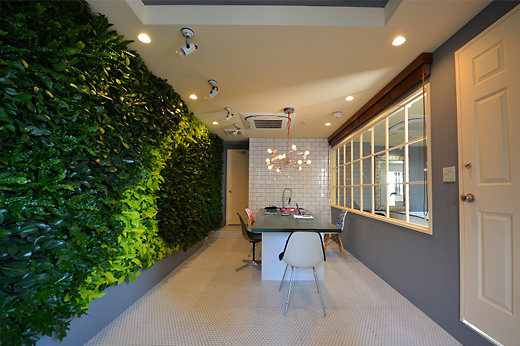
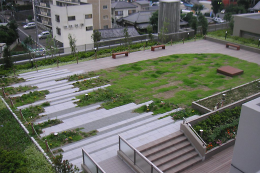
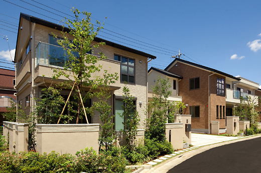
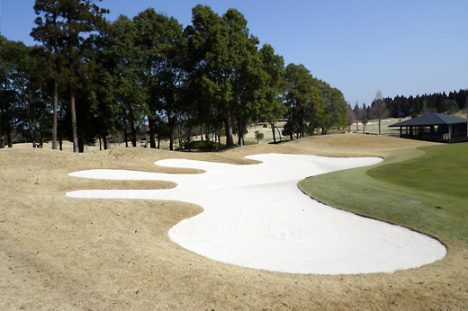

TPM工法
trans planting machine
お知らせ
information
-
樹木移植工法
TPM工法

樹木への負担が少なく、効率的な大径木の移植工法。あああああああああああああああああああああああああああああああああ
-
壁面緑化工法
アースウォール

都市における垂直面の緑化は人工的な景観に潤いを与えます。
-
屋内壁面緑化工法
アースウォール・ステージ

簡単な施工方法で屋内に緑の機会と安らぎを創出します。
-
屋上緑化工法
ピクニックターフ

ヒートアイランド現象の緩和や緑のネットワーク形成に最適。
-
立体型緑化工法
バイオキューブ

人工的な建物に立体的な緑の空間を提供。
-
緑地管理技術

緑の環境に関する幅広いご要望にお応えする万全の体制でご対応。
-
住宅造園管理
ガーデンパートナーズ

プロのガーデナーが「お手入れ」について定期的なアドバイスを行う。
-
バンカー再生工法
Re バンカー

資源を廃棄物にしない自然環境にやさしいバンカー再生工法。
見出しセンターテキスト
English
本文センターテキスト中：
樹齢何十年、何百年の大径木は
その地域の人々の暮らしに寄添いながら、
景観の記憶を残し生物多様性の保全にも
大きく寄与しています。
伐採をせず、地域の資産である樹木を守りながらも
緑化プランの設計に自由な幅を生み出す。
弊社独自の大径木移植技術「TPM 工法」は
本来みどりとともに
あるべき
人と地域をやさしい景観という絆で結びます。
見出しセンターテキストテキスト
見出し左合せテキストテキスト
見出し左合せテキストテキスト
見出し左合せテキストテキスト
本文左合せテキスト中：大径木の移植が可能になり、様々な開発・造成シーンにおいて、今までは伐採と植樹で、
長期間を費やした工法でしか実現し得なかった景観の創出が、短期間で可能になりました。
石勝エクステリアの新しいLandscapeの技術が、
自然環境を壊さずに発展的・継続的に、お客様の独創的なクリエイションの一助となります。
本文左合せテキスト小
立体形状で複数面に植栽ができることから、平面植栽に比べて緑の面積を2～3倍に増やすことができます。
連続した基盤により、根が自由に伸長できることから植物に負担をかけない自然な生育環境が実現します。
それにより多様な植物による植栽が可能です。
お知らせ
News
タイトル
| 設立 | 1972年（昭和47年）1月20日 |
|---|---|
| 代表者 | 代表取締役社長 細井俊宏 |
| 本社 | 〒158-0094 東京都世田谷区玉川2-2-1 |
| 許可業種 | 造園工事業、土木工事業、とび・土工工事業、石工事業、鋼構造物工事業、 ほ装工事業、しゅんせつ工事業、塗装工事業、水道施設工事業、 |
| 技術者 | ・技術士：4名 ・樹木医：6名 ・1級造園施工管理技士：76名 |
| 関連会社 | 株式会社 石勝グリーンメンテナンス |


グッドデザイン賞
「公共用の建築・施設部門」受賞
（2015年)
竣工：2015年（植栽工事）
所在地：東京都渋谷区
事業主：東急不動産
担当業務：実施設計、施工（植栽工事）
イラスト